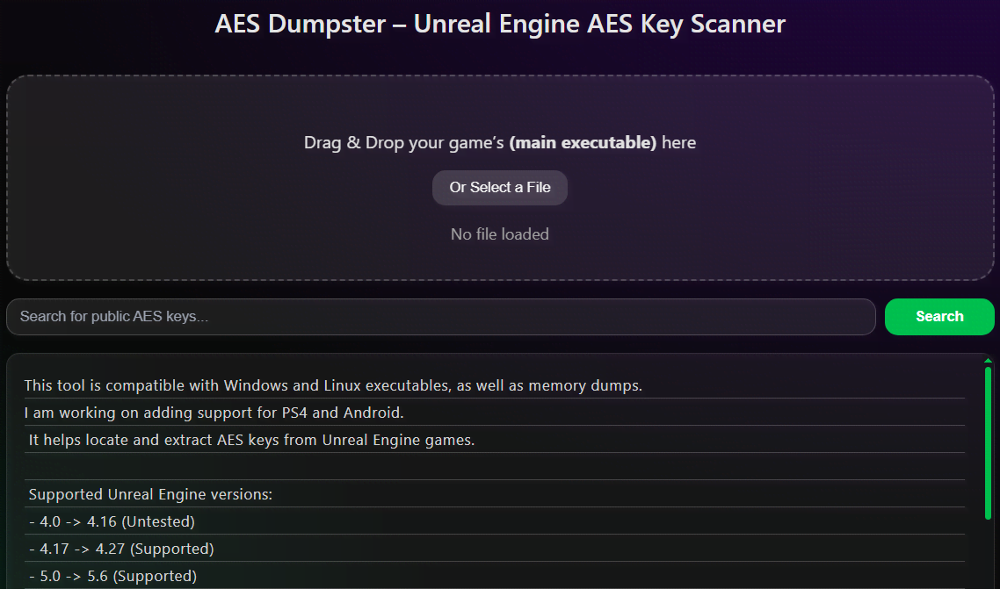
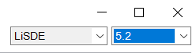

Створення українізатора 2.0
Цей посібник створений як розширення посібника piggsy. Він не повторює інформацію, а розширює її прикладами й новими інструментами. Рекомендується ознайомитися з обома посібниками. Усе, що описано в цьому посібнику, засноване на власному досвіді автора.
Останні зміни: 27.02.2025
Telegram: Галицький Розбишака
Discord: .hikaro
Важливе оголошення
Даний посібник, оновлення інструментів та реліз нових, форки, публічна та приватна допомога з локалізаціями заморожується до досягнення цілі банки:
monobank
Unity
Я однозначно рекомендую переходити з UABEA на UABEANext. Перший фактично перебуває у замороженому стані: розробка припинена, нові версії Unity не підтримуються, а частина критичних багів так і не була виправлена. Натомість UABEANext активно розвивається, отримує підтримку нових версій рушія та пропонує значно ширший і зручніший інструментарій для роботи з асетами.
UABEANext
- Робота з безліччю .asset/.bundle одночасно, підтримка вкладок.
- Підтримка останніх* версій Unity асетів.
- Підтримка пакетного експорту/імпорту асетів.
- Підтримка експорту спрайтів як текстур.
- Підтримка Drag & Drop.
- Підтримка пошуку по Path ID.
- Підтримка пошуку тексту.
- Активно розвивається, можливі баги.
UABEA
- Робота лише з одним .asset/.bundle за раз.
- Не підтримуються нові версії .bundle.
- Експорт/імпорт відбувається поштучно.
- В одному .assets підтягуються файли з інших .assets, що наводить плутатину.
- Баг при імпорті JSON.
- Збій програми при експорті файлів, назва яких перевищує 260 символів.
- Розробка припинена.
Типи асетів Unity, що містять текст
-
TextAsset


У TextAsset зберігаються практично будь-які текстові дані. Це можуть бути власні формати рядків або табличні дані у вигляді CSV чи TSV, структурований JSON чи формат з тегами XML. Такий асет можна експортувати двома варіантами:
a) Через меню Plugins у UABEANext:

b) Через кнопку Export у UABEANext, зберегти файл з форматом JSON і скористатися онлайн-конвертером JSON to CSV.
Для перетворення .csv назад в .json використовуйте онлайн-конвертер CSV to JSON. Приберіть зайві [ ], які встановлюються за замовчуванням, вони не потрібні.
❗️ Зверніть увагу: онлайн-конвертер зберігає .json не з \r\n, як це інколи буває в оригіналі, а лише з \n. Через цю дрібницю у мене траплялися баги з діалогами в одній з ігор. Виправити це можна за допомогою Notepad++: відкрийте всі ваші конвертовані .json і замініть потрібні символи.
-
MonoBehaviour
Експортуйте їх завжди у JSON формат через кнопку Export у UABEANext.
Багатомовні масиви


Використовуйте авторський інструмент Unity Localization Tool, який підтримує сім видів подібних масивів. Перекладайте текст прямо в програмі або експортуйте з неї в CSV чи TXT для перекладу деінде.

Файли з однієї мовою, у тому числі з .bundle


Підтримка таких файлів додана у 4.0 версії Unity Localization Tool.
Імпорт
❗️ Увага: Якщо ви досі використовуєте UABEA для роботи з .assets та .bundle, майте на увазі: в програми є баг, через який .json може імпортуватися некоректно з першого разу. Завжди перевіряйте файл за допомогою кнопки View Data. Якщо з’являється повідомлення Asset failed to deserialize — повторіть імпорт .json.
Новий інструмент UABEANext позбавлений цієї проблеми — імпортування завжди проходить успішно.
.Bundle та catalog.*
Для патчингу catalog.json чи catalog.bin використовуйте покращений мною інструмент CatalogTool, у якому виправлено роботу з бандлами, що містять символи # у назвах, та додано функцію Drag & Drop для патчингу без ручного введення шляху. Це консольна утиліта, просто перетягніть catalog.json/.bin на .exe програми.
Шрифт
Для швидкої і зручної генерації атласу шрифту використовуйте інструмент TMP Unity від MrIkso.
Якщо ви віддаєте перевагу ручній генерації атласів шрифтів через рушій Unity по посібнику від art-kandy використовуйте авторську програму Atlas MonoBehaviour Merger для подальшого об’єднання згенерованих гліфів TMP/2D шрифтів з оригінальними MonoBehaviour.
Неофіційна українська мова
Для додавання української як окремої в MonoBehaviour файли з масивами було написано власний інструмент Array Language Tool.

Її слід використовувати в поєднанні з Unity Localization Tool:
Додатково може знадобитися додавання нового рядка з назвою нашої мови у багатомовний MonoBehaviour і/або редагування .dll гри.
Unreal Engine 4 & 5
AES захист та .sig файл
Для швидкого пошуку AES-ключа зручно користуватися сайтом AES Dumpster.
Якщо у вашій грі використовується AES-захист разом із .sig файлами у теці Paks, скористайтеся інструментом Unreal Engine Signature Check Bypasser (один з авторів українець). Його потрібно розпаковувати у теку Binaries/Win64 поряд з .exe, так, обидва .dll та .asi. Якщо на вашій грі це не спрацювало, створіть issue в репозиторії авторів щодо цього.
Це дозволить завантажувати сторонні .pak файли грою без необхідності ручного прописування -fileopenlog у «Параметрах запуску» властивостей гри в Steam.
❗️ Не забудьте додати .dll, .asi файли та файл із ліцензією (❗️ ОБОВ’ЯЗКОВО ❗️) у архів разом із перекладом для решти гравців, або ж додайте посилання на Unreal Engine Signature Check Bypasser для окремого завантаження. ❗️
Текст
Для перекладу та роботи з .locres файлами використовуйте покращену мною версію UE Localization Tool. Також підходить для перекладу .uasset та .umap файлів (Пункт меню програми Налаштування — Підтримка .uasset/.umap — Відкрити бажаний .uasset/.umap.), при умові, що вони не потребують .usmap файлу для коректної обробки.
❗️ Не намагайтеся перекладати такі .uasset/.umap, ви отримаєте неповний текст та пошкодите файл при збереженні. ❗️
UPD: В останніх версіях UE Localization Tool (2.8.4) було виправлено виявлення тексту, тепер його можна безпечно використовувати для перекладу .uasset.
Для об’єднання перекладу з новим .locres після оновлення гри використовуйте авторську CSV Merger Tool.
Як дізнатись, чи для .uasset/.umap необхідний .usmap файл:
Спробуйте відкрити .uasset/.umap у FModel для попереднього перегляду. Якщо з’явиться повідомлення ...mapping file is missing, вітаю, вам потрібен .usmap.
Як дістати .usmap:
Вам потрібен Dumper-7 та DLL Injector.
Як тільки побачите текст Generating SDK tools (*.*ms) можете закривати Командний рядок, при цьому гра також закриється.
Згенерований .usmap знайдете на системному диску у теці Dumper-7.
Правильне розпакування .uasset/.umap разом з .uexp
У вас при Export Data Raw в FModel експортується .uasset/.umap без .uexp? Вітаю, у вас Zen-контейнери.
Для роботи з ними потрібен retoc.
Шаблон команди для експорту потрібного файлу:
retoc --aes-key ВАШ_КЛЮЧ to-legacy --filter "/YourGame/Content/Some/Path/ФАЙЛ.uasset" "C:\Path\To\Game\Content\Paks" "C:\Path\To\OutputDir"
--aes-key можна не використовувати, якщо ваша гра його немає.
У моєму випадку з Life is Strange: Double Exposure команда виглядає ось так:
retoc to-legacy --filter "/Chronos/Content/Data/Localization" "E:\Games\Life is Strange - Double Exposure\Chronos\Content\Paks" "C:\Extract"
Правильний переклад .uasset/.umap:
Раніше ми дістали .usmap з гри, тепер дістали .uasset+.uexp. Далі потрібен UAssetGUI, відкриваємо програму та імпортуємо наш .usmap.
Після чого обираємо в правому куті програми наш .usmap зі списку, та версію рушія (її ми дізнались при інджекті .dll)
Після всіх дій відкриваємо наш .uasset:
Я не рекомендую перекладати текст прямо в UAssetGUI. По-перше, в рядку англійського тексту постійно потрібно змінювати значення стовпця Variant з us-ascii на utf-16 для підтримки кирилиці (інакше при збереженні і повторному відкритті .uasset у вас буде ???????? замість тексту). По-друге, це неефективна та марудна робота.
Для зручнішого перекладу натисніть File — Save As оберіть внизу Тип файлу .json та збережіть. У такому виді файлу не потрібно перейматись за значення стовпця Variant і можна перекладати спокійно рядки з текстом.

Такі .json файли також можна розпарсити та перекладати в .csv, але це робиться індивідуально для кожної гри, немає універсального інструменту, його потрібно писати власноруч, за допомогою ШІ, просити знайомих техніків або людей на дискорд серверах.
Після перекладу .json потрібно повернути в .uasset формат, для цього відкрийте його через UAssetGUI та натисніть Save, сформується .uasset+.uexp для імпорту в гру, впевніться, що назви файлів ідентичні з оригіналами з гри.
Заміна шрифтів
Коли поряд з .uasset немає файлу.ufont, а ви впевнені, що шрифт усередині .uasset+.uexp — знадобиться авторська програма UAsset Font Tool. Підтримується заміна .ttf та .swf. Перевірено на Life is Strange 2, Borderlands 3 та KINGDOM HEARTS III + Re Mind.
Приклад заміненого шрифту через програму:
Пакування Zen-контейнерів
Для цього нам знову потрібен retoc.
Шаблон команди:
retoc to-zen ТЕКА ФАЙЛ.utoc --version UE*_*
У моєму випадку з Life is Strange: Double Exposure команда виглядає ось так:
retoc to-zen Exports pakchunk8-Windows_P.utoc --version UE5_2
Результат виконаної роботи:
Неофіційна українська мова
У даній статті я описав метод можливого додавання української як окремої мови, зауважу, не всюди таке спрацює, якщо маєте бажання, можете спробувати на своїй грі.
Інструменти
Unity
- Unity Localization Tool 4.4.1 — авторський інструмент для зручного перекладу і роботи з MonoBehaviour файлами. Остання публічна версія. Планується перехід на закриту основу.
- Array Language Tool 1.4 — авторський інструмент для зручного додавання і видалення мов з багатомовних масивів MonoBehaviour файлу.
- CatalogTool 1.2 — власний форк CatalogTool.
- Додав підтримку Drag & Drop.
- Виправив патчинг бандлів, що містять символи # у назвах.
- Atlas MonoBehaviour Merger 1.4 — авторський інструмент для зручного об’єднання згенерованих гліфів з оригінальним MonoBehaviour файлом шрифту.
- UnityCLI — авторський консольний інструмент для пакетного експорт/імпорту будь-яких типів асетів, потрібних для локалізації, в тому числі аудіо та відео. Публічний реліз після закриття банки.
Деталі форку
Unreal Engine
- UE Localization Tool 2.8.6 — власний форк UE4LocalizationsTool зі швидшою роботою, виправленням помилок і новим функціоналом. Підтримку форку припинено. Можлива втрата певної кількості рядків в locres файлі після збереження (те саме відбувається і з оригінальною програмою), подальше використання на свій страх і ризик.
- Змінив бібліотеку для CSV і переписав його обробку.
- Оптимізував програму асинхронними методами та словниками.
Для тестування швидкості було взято .locres файл на 107233 рядка з мільйоном слів.
UE4 Localizations Tool 2.7:
Відкриття .locres: 28 с 567 мс; Імпорт .csv: 2 с 983 мс; Збереження .locres: 2 хв 49 с 350 мс.
UE Localizations Tool 2.7.8:
Відкриття .locres: 1 с 283 мс; Імпорт .csv: 2 с 567 мс; Збереження .locres: 2 с 750 мс.
Відкриття стало приблизно на 95,5% швидшим.
Імпорт став приблизно на 13,9% швидшим.
Збереження стало приблизно на 98,4% швидшим. - Додав підтримку .locres v4 (Stellar Blade).
- Додав імпорт TXT за ID (за проханням Aedan).
- Додав експорт CSV/TXT тільки вибраних рядків (за проханням volorus).
- Додав підрахунок слів.
- Переписав обробку .locres.
- Покращив інтерфейс.
- Переклав українською.
- Виправив і додав статусні повідомлення у багатьох місцях.
- Виправив виявлення тексту у .uasset. В одному файлі зустрічаються два різні формати структури даних. Реалізував двопрохідний алгоритм обробки файлу.
- CSV Merger Tool 1.3 — авторський інструмент для об’єднання перекладу з новим CSV файлом. Підтримку припинено.
- UAsset Font Tool 1.2 — авторський інструмент для заміни .ttf чи .swf шрифту у .uasset+uexp файлах.
- UELT — закритий авторський інструмент, глибоко переосмислений UE Localization Tool, інтерфейс створено з нуля, логіку роботи суттєво перероблено й розширено, позбавлений проблем попередників. Зараз доступ надається обмеженій кількості людей. Після закриття банки доступ надаватиметься лише перекладачам, які не займаються машинним перекладом.
- FModel Text Searcher — власний форк FModel з функцією пошуку тексту по всіх файлах. Після закриття банки надаватиметься лише перекладачам, які не займаються машинним перекладом.
Деталі форку
Поради
Для перекладу тексту та порівняння з оригіналом зручно використовувати ExamDiff, саме Pro версію, яка підтримує усі compare-функції.
Для вводу символів … — – « » ’ ° зручно використовувати авторські швидкі клавіші на AutoHotkey (Тільки для Windows).